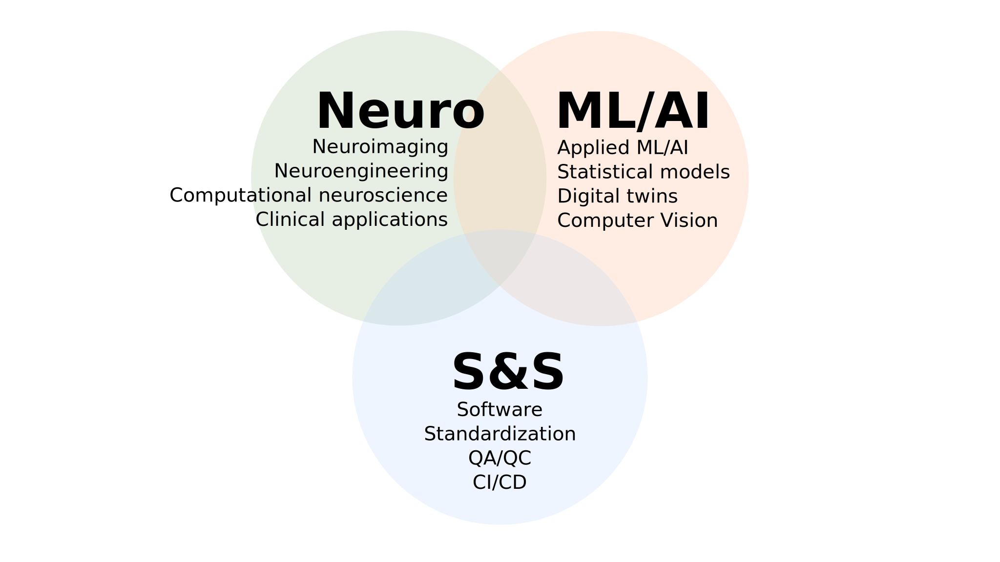

name: title layout: true class: center --- name: newsection layout: true .perma-sidebar[ <p class="rotate"> <a rel="license" href="http://creativecommons.org/licenses/by/4.0/"><img alt="Creative Commons License" style="border-width:0; height: 20px; padding-top: 6px;" src="https://i.creativecommons.org/l/by/4.0/88x31.png" /></a> <span style="padding-left: 10px; font-weight: 600;">Introducing Oscar Esteban | 13.03.2025</span> </p> ] --- # About me .right-column3.center[ (Link to slides) <a href="https://oesteban.github.io/talks/20250313/"> <br /> https://oesteban.github.io/talks/20250313/ </a> ] .pad-top.left-column3[ .people-table.larger[ | | | |---:|---| |  | **Oscar Esteban** <br /> Research & Teaching FNS Fellow <br /> Head of [AxonLab](https://www.axonlab.org) <br /> Dept. of Radiology, CHUV | ] I'm a **computational neuroscientist** and **open science** advocate. Ph.D. (2015) @ Universidad Politécnica de Madrid [ESKAS (2012) @ EPFL], PD (2020) @ Stanford University <!-- At Stanford University, we created *fMRIPrep* and initiated [*NiPreps*](https://www.nipreps.org), focusing on ensuring robust, standardized research across studies. I currently lead the *Human Connectome PHantom project*, tackling the challenge of characterizing the reliability of brain networks. --> .larger[***Mental* health—both human and machine—**is becoming the next big challenge.] Hallucinations · Confabulation · Cognitive overload · Forgetting · Delusions · Bias · Attention · Agency · Emergent Behavior ] --- <br /> <br /> --- .boxed-content.centered[  ] ??? This diagram shows the intersection of my core areas: neuroimaging and computational neuroscience, ML/AI and computer vision, and finally Software engineering & standardization (S&S). I have identified three main funding opportunities which can be loosely assigned to each of these areas. --- .boxed-content.centered[ ] ??? The first is an SNSF Division II proposing to streamline QA/QC within the MRI experiment session before images are reconstructed (and therefore interpretable by the human eye). The project is not just an idea. In fact, I responded to an R01 call from the NIH in the US, and despite falling right below the funding line, the project obtained a very good score. To address the main criticism of the reviewers, I'm collecting preliminary data in collaboration with Dr. Franceschiello (HES-SO and the sense) to secure a well-rounded submission by October 2025. This project has strong industry connections with MR vendors such as Siemens and could dramatically reduce artifacts early-on and save precious dollars sunk into unusable data as well as participants' time. I see it as an opportunity to partner with ML experts at Idiap who specialize in signal processing, plus non-academic collaborators in the medical imaging industry. --- .boxed-content.centered[ ] ??? The second is my ERC Consolidator proposal called NETwin (network digital twins for personalized epilepsy). The idea is to build individualized “digital twins” of a patient’s brain network using SC and FC data, then apply AI-based modeling to predict seizures and treatment outcomes. This is directly relevant to my background in connectivity, harnessing those improved pipelines from NiPreps and the reliability insights from HCPh. Like the SNSF project, this proposal derives from previous funding efforts. --- .boxed-content.centered[ ] ??? The third core grant is more speculative and involves industry collaboration through an Innosuisse Innovation project. To identify potential partners, we plan to hold a dedicated workshop implementing a "continuing education" program offered to Swiss companies. In addition to potential ex-Idiap figures, I plan to invite Chris Gorgolewski (Antrhopic, and collaborator in the early days of fMRIPrep) and Fabian Pedregosa (Google) as key speakers to ensure the attractiveness. The concept is to systematically benchmark and calibrate advanced imaging or possibly AI-driven scanning protocols. This ties nicely to the “human phantom” concept, potentially enabling multi-site calibration with industry-driven R&D to scale it up. --- # Grant roadmap—core grants .boxed-content.centered[ ] ??? Let's projected these core opportunities into a timeline. As introduced, I'm already focused on the October 25 deadline for the SNSF project. Should this first submission be unsuccessful, I would rework the proposal following the feedback and submit again on April 2026. The next deadline will be for the ERC grant, as early as December 2025 but likely January or Feburary 2026. This submission is also initiated from a head-start position. Finally, the Innosuisse Innovation project is left for the second year, to allow the necessary time to identify at least one industrial partner. --- count:false # Grant roadmap—other .boxed-content.centered[ ] ??? I'm planning to be a co-PI on a grant Russ Poldrack is preparing to advance fMRIPrep. I'm also drafting a Werner-Siemens-Stiftung application, which funds projects with industrial application to move AI into raising the quality levels of neuroimaging in the hospital. I'm planning to apply with a colleague at University of Copenhagen to a novo nordisk data science grant. And finally with Prof. Molly Bright through the US NSF and Swiss NSF partnership program. This timeline is highly dynamic and some other opportunities will be tracked and applied for if suitable. --- # Conclusion & Next Steps <br /> .boxed-content.larger.no-bullet[ * <i class="fa-solid fa-brain"></i> .larger[Leadership in **Neurocomputing & Neuroimaging**] .indent[ .gray-text[Bridging fundamental science and real-world impact] ] * <i class="fa-solid fa-forward"></i> .larger[**ML/AI Integration**] .indent[ .gray-text[Defining the next-generation neuro-engineering technology] ] * <i class="fa-solid fa-bridge"></i> .larger[**Software & Standardization (S&S)**] .indent[ .gray-text[Bridging research and real-world deployment by industry] ] * <i class="fa-solid fa-location-arrow"></i> .larger[**Clear roadmap**] .indent[ .gray-text[Two in-progress proposals building on feedback from previous applications, and additional funding opportunities] ] ] ??? Thank you for your attention! I’m excited about initiating and leading a new neuro-computing research area within the AI4Life program at Idiap, blending the institute's focus on AI/ML and software engineering and produce tangible benefits. I look forward to your questions. --- layout: false count: false .center[ <a href="https://oesteban.github.io/talks/20250313/"> <br /> https://oesteban.github.io/talks/20250313/ </a> <br /> <br /> # Thank you Oscar Esteban <<code>phd@oscaresteban.es</code>> ] ???